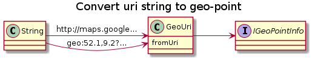
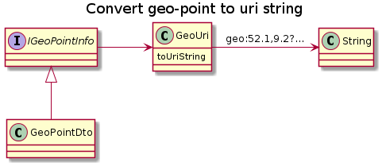

public class GeoUri
extends java.lang.Object
Converts between a IGeoPointInfo and a uri String.

GeoUri parser = new GeoUri(GeoUri.OPT_DEFAULT);
IGeoPointInfo geo = parser.fromUri("geo:52.1,9.2?z=14");
System.out.print(String.format("got lat=%f lon=%f", geo.getLatitude(),geo.getLongitude()));

GeoUri formater = new GeoUri(GeoUri.OPT_DEFAULT);
GeoPointDto geo = new GeoPointDto()
.setLatitude(52.1)
.setLongitude(9.2)
.setZoomMin(14);
String geoUri = formater.toUriString(geo);
Format:
Example (with OPT_FORMAT_REDUNDANT_LAT_LON set):
This should be compatible with standard http://tools.ietf.org/html/draft-mayrhofer-geo-uri-00 and with googlemap for android.
This implementation has aditional non-standard parameters for LocationViewer clients.
For details see supported geo uri formats
Created by k3b on 13.01.2015.
| Modifier and Type | Field and Description |
|---|---|
static java.lang.String |
AREA_SCHEME |
static java.lang.String |
GEO_SCHEME |
static java.lang.String |
HTTP_SCHEME |
static java.lang.String |
HTTPS_SCHEME |
static int |
OPT_DEFAULT
Option for
GeoUri(int): |
static int |
OPT_FORMAT_REDUNDANT_LAT_LON
Option for
GeoUri(int) to influence toUriString(IGeoPointInfo): Add lat/long twice. |
static int |
OPT_PARSE_INFER_MISSING
Option for
GeoUri(int) for fromUri(String) : If set try to get IGeoPointInfo.getTimeOfMeasurement(), IGeoPointInfo.getLatitude(), IGeoPointInfo.getLongitude(), IGeoPointInfo.getName() from other fields. |
| Constructor and Description |
|---|
GeoUri(int options)
Create with options from OPT_xxx
|
| Modifier and Type | Method and Description |
|---|---|
IGeoPointInfo |
fromUri(java.lang.String uri)
Load
IGeoPointInfo from uri-String. |
<TGeo extends GeoPointDto> |
fromUri(java.lang.String uri,
TGeo parseResult)
Load
IGeoPointInfo from uri-String into parseResult. |
<TGeo extends GeoPointDto> |
fromUri(java.lang.String uri,
TGeo[] parseResult)
Load
GeoPointDto[2] from area-uri-String into parseResult. |
static GeoPointDto |
inferMissing(GeoPointDto parseResult,
java.lang.String textToBeAnalysed)
Infer name,time,link,symbol from textToBeAnalysed if the fields are not already filled.
|
static void |
parseLatOrLon(GeoPointDto parseResult,
java.lang.String... whereToSearch)
Parsing helper: Set first finding of lat and lon to parseResult
|
java.lang.String |
toUriString(IGeoPointInfo geoPoint)
Converts a
IGeoPointInfo into uri String representatino. |
java.lang.String |
toUriString(IGeoPointInfo northEast,
IGeoPointInfo southWest)
Creates area-uri-
String from two bounding IGeoPointInfo-s. |
public static final int OPT_DEFAULT
Option for GeoUri(int):
public static final int OPT_FORMAT_REDUNDANT_LAT_LON
Option for GeoUri(int) to influence toUriString(IGeoPointInfo): Add lat/long twice.
Example with opton set (and understood by google):
Example with opton not set (and not understood by google):
public static final int OPT_PARSE_INFER_MISSING
Option for GeoUri(int) for fromUri(String) : If set try to get IGeoPointInfo.getTimeOfMeasurement(), IGeoPointInfo.getLatitude(), IGeoPointInfo.getLongitude(), IGeoPointInfo.getName() from other fields.
Example:
would set IGeoPointInfo.getTimeOfMeasurement(), IGeoPointInfo.getLatitude(), IGeoPointInfo.getLongitude(), IGeoPointInfo.getName() from IGeoPointInfo.getDescription() .
public static final java.lang.String GEO_SCHEME
public static final java.lang.String AREA_SCHEME
public static final java.lang.String HTTPS_SCHEME
public static final java.lang.String HTTP_SCHEME
public IGeoPointInfo fromUri(java.lang.String uri)
Load IGeoPointInfo from uri-String.
For details see supported geo uri formats
public <TGeo extends GeoPointDto> TGeo fromUri(java.lang.String uri, TGeo parseResult)
Load IGeoPointInfo from uri-String into parseResult.
For details see supported geo uri formats
public <TGeo extends GeoPointDto> TGeo[] fromUri(java.lang.String uri, TGeo[] parseResult)
Load GeoPointDto[2] from area-uri-String into parseResult.
public static GeoPointDto inferMissing(GeoPointDto parseResult, java.lang.String textToBeAnalysed)
Infer name,time,link,symbol from textToBeAnalysed if the fields are not already filled.
public static void parseLatOrLon(GeoPointDto parseResult, java.lang.String... whereToSearch)
Parsing helper: Set first finding of lat and lon to parseResult
public java.lang.String toUriString(IGeoPointInfo geoPoint)
Converts a IGeoPointInfo into uri String representatino.
Format
geo:{lat{,lon{,hight_ignore}}}{?q={lat}{,lon}{,hight_ignore}{(name)}}{&uri=uri}{&id=id}{&d=description}{&z=zmin{&z2=zmax}}{&t=timeOfMeasurement}
For details see supported geo uri formats
public java.lang.String toUriString(IGeoPointInfo northEast, IGeoPointInfo southWest)
Creates area-uri-String from two bounding IGeoPointInfo-s.